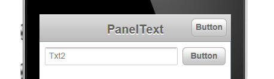
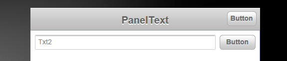
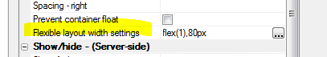
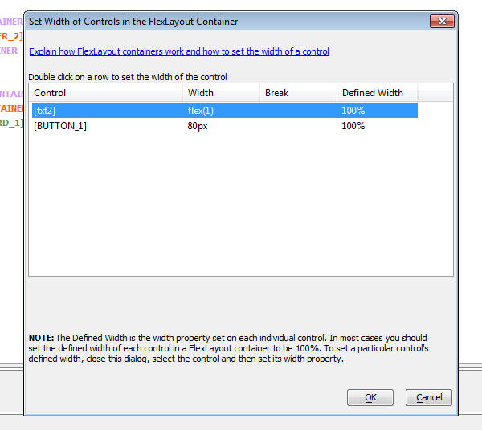

This document describes the updates and fixes made to Alpha Anywhere since its initial release.
To see the 'What's New in V12' document (which describes all of the new features in Alpha Anywhere's initial release) please click here.
Please note that Alpha Anywhere patches are only available to users with
a current subscription.
You can verify your subscription status from within Alpha Anywhere by
going to Help, About, or by clicking this link shown here (https://activation.alphasoftware.com/subscriptionStatus.aspx).
If you install an update for which your subscription is not entitled,
you will need to uninstall the update and rollback to an older version
that you are authorized to use in order to continue using Alpha
Anywhere.
In addition to the official updates that Alpha Software makes available from time to time (which are described in this document), we also make available our internal pre-release builds that allow you to see what features have been added and what bugs have been fixed since the last official update. The features and bug fixes in the pre-release build will be part of the next official update. To see the pre-release notes, please click here.
| UX Component | Preventing a Panel from Losing Focus |
A common design pattern in a mobile application
is to have multiple Panel Cards inside a Panel
Navigator. If one of the Panel Cards contains a
form, you might want to prevent the user from
navigating to another Panel Card if the form has
been edited, but not yet been saved. In this video we show how this is easily done using the Panel Navigator's onBeforePanelActivate event. The same techniques can be used in a PanelLayout. Watch Video Download Component |
| UX Component | Responsive Design - Dynamically Resizing Controls on Orientation or Window Size Change - Understanding the FlexLayout Container |
A common requirement when designing a UX
component is to have a control dynamically
resize when the orientation of a mobile device
changes or when the window size (in a desktop
browser) changes. This is easily accomplished
using the FlexLayout container on a UX. Any of the controls in a FlexLayout container can have their width specified as a 'relative' size (relative to the size of the other controls in the FlexLayout container). This video shows how to use the FlexLayout container type. Watch Video - Part 1 Watch Video - Part 2 |
UX Component - Image Upload Action - Thumbnails - If you specified that you wanted to create a thumbnail when uploading images, and the target for the thumbnail image was a character field in the target table, the 'image filename transformation expression' was being ignored and the actual filename for the thumbnail image that was stored was always just the short filename.
<Resultset>.ToJSONObjectSyntax() method - The JSON generated by this AlphaDAO method has been changed. Previously, the values in the generated JSON were single quoted. Now, to be consistent with the official JSON syntax, values are double quoted.
UX Component - Tab Control - Genie Style - If a 'genie' style Tab Control was wrapped in a Container control and the [Tab Control End] control came immediately before the [ContainerEnd] control, the genie buttons did not render.
Grid Component - Images - Under some circumstances, if a Grid contained an image control, it would generate an error. This was a newly introduced bug. If you received this error, you will need to edit and resave the Grid.
UX Component - PanelNavigator and PanelLayout - onBeforePanelActivate Event - A new event has been added to the PanelNavigator and the PanelLayout. This event is useful if you want to prevent the Panel that has focus losing focus. For example, if the form fields on a Panel have been edited, but not yet committed, you might want to prevent the Panel from losing focus. This is much like preventing a pop-up window that contains a Grid or UX component from closing if the child component has been edited.
If the Javascript that you define in the onBeforePanelActivate event returns false, then any attempt to activate another Panel will fail and focus will remain on the Panel that currently has focus. If the event returns true, then you will be able to give focus to another Panel.
Watch Video
Download Component
UX and Grid Component - Image Upload - Thumbnails - The Action Javascript builder now has a new option in the Thumbnail Definition Builder to allow you to specify if the thumbnail file that is created should overwrite an existing file, or be renamed, so as not to conflict with existing files.
UX and Grid Component - Image Upload - File Rename - When you upload images or files and store the uploaded images or files in a filename on a server, there is an option to rename the file if there is an existing file with the same name on the server. The algorithm that computes the filename in the case of a conflict has been changed slightly.
Previously, if a filed called "c:\myimages\image1.jpg" existed and you wanted to create a new file called 'image1.jpg', the new file would have been called "c:\myimages\images2.jpg". This is now changed to "c:\myimages\myimage1_1.jpg".
UX Component - FlexLayout Containers - A new container type in the UX component makes it easy to dynamically size controls when the orientation of the device changes (mobile devices), or the window size changes (desktop browsers).
Watch Video - Part 1
Watch Video - Part 2
The purpose of the FlexLayout container is to dynamically size the widths of controls that are on a single line. This container does not size the height of controls.
NOTE FlexLayout containers are not supported in Repeating Sections.
For example in the image below, the device is in portrait mode. The button to the right of the textbox control is set to have a fixed size of 80px. The text box has been set to have a flexible width, so it consumes all of the available space (less the built-in padding between controls, defined by the A5CWLayout class padding property).

Notice in the image below, when the device orientation is changed to landscape, the button size has not changed - it is still 80px wide. But the textbox had grown in width.

Here is how the textbox and button control are represented in the builder. Note that the controls are wrapped in a container with a sub-type of 'FlexLayout'.
When you set the container sub-type to FlexLayout, a new property in the Property Grid is exposed. The image shows that the 'Flexible layout width settings' have been set to:
flex(1),80px
This means that the first control in the FlexLayout container will have relative width of flex(1) (this is the textbox), and the second control (i.e. the button) will have a fixed width of 80px.

The property has a smart field which brings up a builder to help you set the control widths.
Notice that the builder also shows the 'Defined Width' for each control. The 'Defined Width' is the width that was defined for each individual control.
Typically when you wrap controls in a FlexLayout container, you will want to set each control's Defined Width to 100%. The builder will show you at a glance if any of the top-level controls in the FlexLayout container have not been set to 100%.
The 'Break' column will also show you at a glance if any of the top-level controls in the FlexLayout have breaks after them. You should not have breaks after top-level controls, so the builder will give you a warning to fix this problem.

In the case where only one control in a FlexLayout container has a 'flex' width, the meaning of the flex setting is simply to fill the available space on the line (after allocating space to the fixed size controls).
However, if you have two or more controls with a 'flex' setting, then all of the flex controls together will fill the available space (after allotting space to any fixed size controls), and each 'flex' control will have a relative size based on its 'flex' setting.
For example, if you have two flex controls with settings of flex(1) and flex(2), then the second control will always be twice the width of the first control.